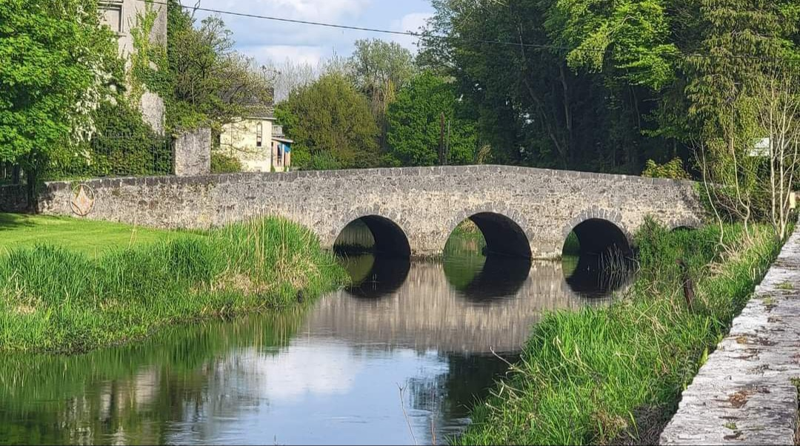

Clara Heritage Society
Diaspora Page
This website uses the Dark mode or Light mode option

Dark Mode is OFF
It has been said that for a town of its size Clara punches well above its weight in terms of its notable sons and daughters.
Clara town is home to former Taoiseach Brian Cowen,
top golfer Shane Lowry,
it saw Marconi's first demonstration of his new wireless communication system,
it boasts one of the earliest examples of St. Brigid's convent in Kilbride.
However, Clara's sons and daughter have made a considerable impact not only within Clara and Ireland
but some have made an indelible mark in further flung places such as Australia, United States, Canada and Europe.
This series hopes to highlight some of these lesser well known sons and daughters.
Emigration:
Exploring the family history of the Bagley family in Offaly: Clara

By Fourth great-granddaughter: Ginny Birmingham Haen SEPTEMBER 3, 2022 ~ OFFALY HISTORY
Several of my ancestral families came from Ireland in the early to mid 1800s. They came from Counties Dublin, Armagh, Tyrone, Westmeath and King’s (now Offaly) and surrounding midlands counties. The one common factor was that they all migrated to Quebec, settling in several small communities in the area just southeast of Quebec City across the St. Lawrence River.
After a generation, many of those families moved to western Canada or the United States, often settling together. Many went to Wisconsin and Michigan where they worked in the logging industry and farmed. In the next generation, some married into other Irish families, so studying one’s family gradually evolved into studying several. My families were among those settling in Jacksonport, Door County, Wisconsin.
I had always wondered how and when these Church of England/Ireland families got to Ireland from England and Scotland, then migrated to the same places in North America. What did they have in common? There are no relevant ship manifest lists for British Isles migrants going to Canada since it is a part of the British Commonwealth, and it was not like going from one country to another.
I have an old family Bible with some information, but for the most part all I had to go on was Canadian census records or church records which gave a child’s birthplace and age, indicating approximately when the families left Ireland, and if I was lucky, a more specific birthplace. Usually, specific meant only a county. Family lore told of one or two Bagley children being born in Clara, Kings County. Other names of the Quebec families appeared in the Irish Midlands, so I concentrated my research there.
Researching the Bagley branch of my family began with a mysterious document online. Fourth great-grandpa John Bagley was born about 1775 in Ireland; a couple of his children listed Clara as their birthplace. John and most of his adult family emigrated to Quebec in the very early 1830s and he died there, leaving a will dated 8 January 1849.
The mysterious document was a probate record in Ireland dated 1850, for “Lot 8, consisting of the Town and Lands of Caponarath, otherwise Capna Murhead, otherwise Caponrath, held in Fee- simple, situate in the Barony of Kilcourcy, and King’s County.” [1] The tenant’s name was John Scally, Assignee of John Bagley (either a representative of or the recipient of the property), and it referred back to a lease dated 13th April 1797 for three lives: an observations column in the document stated “two lives (Isaac Bagley and William Bagley) in being.” Isaac was age 12, William was age 10. At that time, tenant leases were often written for three lives, the second and third being younger family members, a lease not ending until the last named person died. This allowed the family to hold the land for a longer period under the same conditions as the original lease. Also note that Caponarath had other spellings in other documents, including Cappanamorath and Capnareath. From this point forward, the spelling will reflect the spelling in the particular document, followed by (var.).
This got my attention for several reasons. Clara, birthplace of several of John’s children, and Caponarath (var.) are both in the Parish of Kilbride, Barony of Kilcoursey; there were several generations of Johns, Isaacs and Williams going forward in the family; and John had recently died, though it seemed strange that this transaction occurred almost 20 years after he had left Ireland. My interest was piqued so I followed the clues in early documents resulting in the following findings:
1794: A memorial of indentured deed (a copy of the original deed) from 1794 shows Isabella Bagley (executrix) and Isaac Bagley (dec’d) transferring land to Isaac the younger. Isabella’s residence: townland of Tubberdaly (Toberdaly), Barony of Warrenstown, Parish of Castlejordan, Isaac the younger being of the same place. The land being transferred was described as “called the nineteen and being in the Barony of Kilcoursey, King’s County containing by estimate nineteen acres…the same more or less.” [2] Isaac the younger can be assumed to be the son of Isaac (dec’d) and Isabella. Their relationship to my John Bagley is unknown.
1797: Another document, referred to in the mysterious probate record, refers back to the 1794 document above. In1797 this memorial of indentured deed, transferred land from Gustave Lambert to John Bagley, in the townland of Capna Murhead (var.) , otherwise Caponrath (var.), Barony of Kilcoursey, Parish of Horseleap, commonly called “Nineteen Acres,” specifying the land as 18 acres and 12 perches more or less. At this time in Ireland, land was measured in acres, roods, and perches, a rood being a quarter acre and a rood containing 40 perches. It was to last for three lives, John’s and his brothers’ Isaac and William (ages 12 and 10). [3] Though the aforementioned Tubberdaly (Toberdaly) is in eastern King’s County, the “Nineteen Acres” transferred sounds like the Kilcoursey property further to the west. I can’t explain why this document puts the property in the Parish of Horseleap rather than Kilbride. On the later Griffith’s maps, Caponarath (var.) is clearly in the Parish of Kilbride, adjacent to Horseleap. Possibly there were boundary changes between 1797 and 1854?
1797: Then, in order to understand events of these times, I read newspaper accounts of the Irish Rebellion of 1798. I couldn’t believe what I was reading. In 1797, in Tubberdaly (Toberdaly), an Isaac Bagley and wife Sarah were murdered and their house burned. Their young children, John and Mary witnessed this and were injured but survived. The perpetrators wanted guns and money, and Isaac was accused of resisting the United Irishmen and being a “Tory Hunter.” The accused perpetrators were acquitted. [4]
1826: The Tithe Applotment books of 1826, showed a John Bagley living in Capnareath (var.). My ancestor, John, had married Ann Holmes, and his son Isaac, my third great grandpa, married Eliza Rothwell. [5] Looking a little closer at the Tithe Applotment books, more surprises. Very near to John Bagley, in Balicknahee, were a William Rothwell and a Courtney Holmes.[6]
1826: Plotting the 1826 properties on the later Griffith’s Valuation maps, revealed their locations. [7] The townland of Ballicknahee is adjacent to the townland of Cappanamorath (var.).
1852: An Isaac Bagley of Grange (Barony and Parish of Geashill, Ireland) (was charged with leaving his horse and car unattended in the townland of Edenderry, Barony of Coolestown, Parish of Monasteroris.[8] This was near the Toberdaly/Tubberdaly family property in the 1794 land transaction above. It’s just a fun fact, too late to be my immediate family but interesting to note the repeated use of the name Isaac in the Bagley family.
1854: Though John Bagley and William Holmes have already gone to Canada, Griffith’s is significant because of their absence. John Scalley/Scally is still occupying Cappanamorath (var.) following his mention on the 1850 Landed Estate Court/Probate record previously noted. There is still a Rothwell in Ballicknahee. Though there is not a Holmes shown in Ballicknahee in 1854, there are a Robert Holmes and a John Holmes in nearby Clara and Erry.[9]
1899: Mrs. Isaac (Eliza Rothwell) Bagley died in Marshall City, Calhoun County, Michigan, USA at the home of her daughter. Her parents were listed as William Rothwell and Bessie Holmes.[10] Was this the same William Rothwell that lived in Ballicknahee near John Bagley in 1826? Was Bessie a member of the Holmes family who married into the Bagley family?
These were all probabilities but not proof. Was this the end of the search? No, the Offaly History Centre then located birth/baptismal records for Isaac & Eliza Bagley’s children in the Banagher Union of parishes in the Civil Parish of Tisaran, Barony of Garrycastle. [11] Those birthdates matched those of the known children of Isaac & Eliza (Rothwell) Bagley that I had discovered in my genealogical research. The Parish of Tisaran was a little to the southwest of the Parish of Kilbride where the Bagley, Holmes and Rothwell families had lived.
The 1824–1856 Valuation Records (Field & House books) revealed other interesting facts. Though Isaac didn’t appear on the 1820s Tithe Applotment books, he occupied all 196 acres of the townland of Lisdaly in the parish of Tisaran in 1844 and 1845. The first seven pages of the 1844 Field book describe each section of the property. [12] They give many details such as ruins of buildings, soil type, whether the land was meadow, pasture or bog and mention of streams or rivers. The 1845 House book detailing just the buildings, describes a large house, 48 x 15.5 x 17.5 feet, a barn and other outbuildings.
Later in 1845, another House Book record showed Isaac Bagley’s name crossed out and replaced by Beresford L’Estrange, from a neighbouring property. [14] The L’Estrange family had owned land in nearby Hunston since the mid-1700s. [15] This was common practice of the time when land changed hands rather than creating new books.
Cappanamorath from the first issue of the Ordnance Maps in 1838 – the six-inch scale. Courtesy of Offaly History
Details become a bit blurred at this point after the years of the famine and exodus of many, but by 1854, the Lisdaly property and over 7,300 more acres in the Parishes of Tisaran and adjacent Clonmacnoise were incumbered and sold to others, [16] including Henry Lord Viscount Ashcroft who is shown as owner, occupier and landowner of Lisdaly in the 1854 Griffith’s Valuation.[17]
The Encumbered Estates Court (or Incumbered as it was referred to in older documents I read) was established in 1849. Due to the famine, many tenants could not pay their rent or had emigrated in order to survive. This left the landowners unable to make their own mortgage payments and as a result defaulting, so their land became incumbered and sold to speculators and others who could afford it.
By 1851 Isaac Bagley was a farmer in Standon, Bellechasse, Canada East (Quebec) . [18] He and Eliza added two more children to their family after arriving in Canada.
I now know that this Isaac Bagley was my third great-grandfather. Strong evidence shows that John and (Ann Holmes) Bagley of Capnareath (var.) were his parents, and that the William Rothwell living nearby was the probable parent of Eliza (Rothwell) Bagley, but proof is elusive.
Questions remain. John Bagley occupied his Kilcoursey land “in fee,” indicating ownership of some sort. Also noted on the document was, “from the date of this Lease, the Tenant would appear subject to rent-charge, yet the Landlord has always paid it.”[19] Why? Why did his brothers, William & Isaac not continue to live on the land? Did they die in the rebellious years or did they default on the land? How were the extended Bagleys in County Offaly connected? Though Isaac occupied a full townland of 196 acres, was he an owner, lessor or a tenant farmer? What was the common thread among the other families from the Irish midlands who emigrated to the same area of Quebec (family names: Smith/Smyth, Crawford, McNeely, Henderson, Bradley, Dickson)?
I will continue to wonder about all these families, in particular, the haunting story about young John and Mary Bagley who watched their home burn and their parents murdered during the tumultuous 1790s. And I will continue to look for more clues.

Brief history of Clara from 1825
Clara started as a typical Irish rural settlement with ring forts and by the mid 18th – century its development was dominated by the linen industry. In 1825, Charlestown and Erry Mills, located on the Brosna River were bought by the Quaker business partners Robert Goodbody and Anthony Pim, and thus set in motion the establishment of the town in following years as a historically important industrial centre. Erry Mill holds pride of place in being the only example of a roller mill in County Offaly and functions as a prominent landscape feature in Clara, with its location on the river. Of Charlestown Mill, only the grain store, which was built in 1853 has survived the ravages of time and even in its current dilapidated state, it proudly bears witness to the once illustrious industrial past of Clara.
The mid to late 19th – century saw the industrialisation of the town with the building of the Clashawaun Jute Works in 1864 by Jonathan and Lewis Frederic Goodbody on the western outskirts of the town. Jute was imported from India and in 1865 spinning & weaving officially commenced to produce sacks, with the employment of 82 employees, (62 females & 20 males) and by 1900 employment had exceeded 600, including 230 female employees. The industrial age brought steam power in 1870, electricity in 1900 and telephones in 1904 to the town and its mills.
Clara at the time epitomised the zeitgeist of the industrial age, a time when innovators dared to dream big and take great risks, either by devising new inventions or finding ways to make existing products more efficient, case in point the importation of jute from India to replace flax. The Clashawaun Jute Works holds significant historical interest as it is the only jute mill in Ireland and the only purpose-built mill village in County Offaly. By 1873, under the patronage of the Goodbody family, a 120 experimental workers houses had been constructed, using a roof system from Portlaw. The philanthropic model settlement was designed for the benefit and welfare of the workers and what remains of the Clashawaun Jute Works, to this day adds interest to the surrounding landscape due to its rarity and river setting.
Of great historic interest and inextricably linked to the Clashawaun Jute Works, Charlestown & Erry Mills and arguably the most prosperous time in Clara’s history to date, is Inchmore House. This landmark building was designed by the noted Victorian Irish Architect, John Skipton Mulvany for the patriarch of the Quaker Merchant family in Clara, Robert Goodbody. Guglielmo Marconi spent a period of 12 months at Inchmore House as a guest of Robert Goodbody. It is well documented that he was perfecting the Telegram at the time and the Marconi Telecom Company was formed in the front room of Inchmore House after the first successful product testing.
Clara was well suited for the textile industry, with the coming of the railways in 1859 which allowed for import/export opportunities and ready access to running water from the Brosna River to operate the mills. As a consequence, Clara was one of only a small number of towns in Ireland which increased in size and underwent an economic, social and physical transformation.
The self-contained nature of the town meant that a range of services and facilities were established to cater for the needs of the ever increasing populous and a variety of shopfronts are still intact on River Street, Main Street and Church Street. These are of historic interest in their own right, as is the detached cruciform gable-fronted Roman Catholic Church built in 1881 to accommodate worshipper numbers.
Clara was wholly dependent upon the textile industry for prosperity and regrettably in the 20th – century the trade declined significantly. In 1971, after 106 years, jute spinning and weaving came to an end at the Clashawaun Jute Works. In October of 1984, J. & L. F. Goodbody Ltd went into receivership with the unfortunate result in coming years of the mills becoming vacant and disused to the detriment of the surrounding area and the town as a whole.
Summer Walking Programme Video
Clara's magnificent walking trails that stretch across the Esker Hills, are all within walking distance of the mainline train station.
These trails were once the main routes from Dublin to the west of Ireland.
In Cromwellian times, people walked these trails having been banished to the west,
and during the great famine people travelled the road from west to east in search of an existence.
All are welcome to join our walks.
YouTube